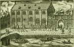
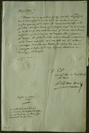
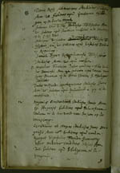
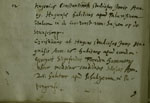
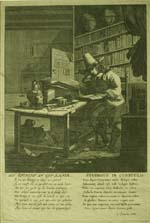

Christiaan Huygens. Facetten van een genie
De manuscripten
8 april 31 mei 2004
Tentoonstelling in de Universiteitsbibliotheek Leiden
1. Op kamers in Leiden: Christiaan als student (1645-1647)
Christiaan kwam uit een bijzondere familie. Zijn vader Constantijn (1596-1687) was secretaris en adviseur van stadhouder Frederik Hendrik, prins van Oranje, en daarmee een van de invloedrijkste mannen in de Republiek. Tevens genoot hij grote faam als dichter en componist. Zijn kinderen werden in ’s-Gravenhage door privé-leraren met zorg onderwezen in de kunsten en wetenschappen. In 1645 werd de opleiding van Christiaan en zijn één jaar oudere broer Constantijn voortgezet aan de Leidse universiteit, waar ze tot 1647 verbleven.
|  |
1.1. Joannes Meursius, Athenae Batavae, sive de urbe Leidensi
& academia, virisque claris; qui utramque ingenio suo, atque
scriptis, illustrarunt libri duo. Lugduni Batavorum 1625.
[116 B 17] –– Gravure van het Academiegebouw aan het Rapenburg te Leiden. Dit voormalige convent van de Witte Nonnen werd in 1581 hoofdgebouw van de Leidse Academie. Hier gaven de hoogleraren hun publieke lessen. |
|  | 1.2. Brief van Adolf Vorstius aan
Constantijn Huygens Sr, gedateerd Leiden, 11 maart 1645. [HUG
37] –– Van Voorst, hoogleraar geneeskunde en kruidkunde, dringt er bij vader Huygens op aan dat deze naar Leiden komt om kamers uit te zoeken voor zijn zoons: “Mijn Heer, Sr. Paravicino is op gisteren bij mij geweest, ende heeft geseijt dat wel wenschte dat uwe Eed.t hoe eer hoe liever tot Leijden quame, om de camer ofte camers nae desselfs welgevallen voor sijne soonen uijt te kippen. [...]”. |
|  |
1.3. Album studiosorum Academiae
Lugduno-Batavae, 1645-1662. Manuscript [ASF 10] –– Nadat Christiaan en zijn broer Constantijn in Leiden arriveerden, werden zij op 12 mei 1645 ingeschreven als student rechten aan de Universiteit.
|
|  | |
|  | 1.4. ‘Een student in sijn kamer’. Anonieme gravure, 3e kwart 17e eeuw. [Academisch Historisch Museum, BN 313-I-47] |
| vorige pagina | volgende pagina |